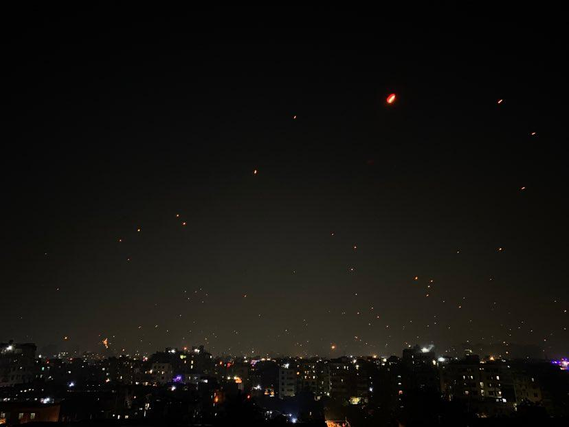

Stay Focussed on
Mission 2022
My Goal or mission is to become a full stack web developer.I'm comfident and hopefull about it. Nothing comes without a price and you have to loose something to gain something. Lastly hard work pays off.
PROFILE LINK
My Goal or mission is to become a full stack web developer.I'm comfident and hopefull about it. Nothing comes without a price and you have to loose something to gain something. Lastly hard work pays off.
PROFILE LINK

My mission is te a web developer .i want to learn more about CSS and HTML. Do many projects for my practice. I also want to learn about back end of a web site. Lastly want to finish all assignments of this course.

My vission is after doing this course i want to do intern as junior developer. So that i can learn more to become a profetional web developer. And also maybe able to earn some goods by doing out sourcing.

My goal is to fullfill my mission and thrive towards my vission.I also achive good grade in my university. In my university its very difficult to get good grades. Lastly i want me make my parents proud.

To get the best of us.We need to think outside of the box.For this we need to practice more and more.Another thing is knowing your own style.it will be unique and people always love unique things .Thats why rolls royes costs more than lamborgini.
Explor NowThis is the era of technology and almost everything id done by online platform.There are vast oportunities swelling around us .We just need to grab those opportunities bt our knowledge and hard work.
Read Document
I'm Tajwar Munim Turzo and enjoying this course very much.Thanks to Programing hero course and Jhankar Mahbub vaia.
A picture of new begining.